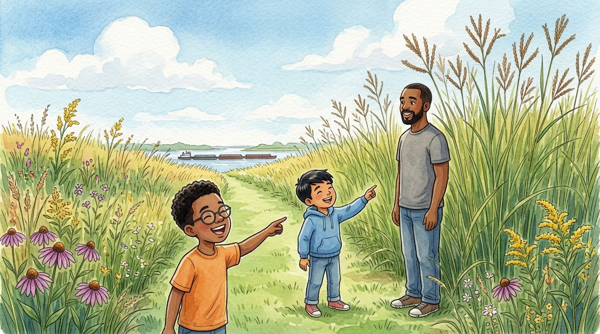

Grade 4 · Social studies · SS.G.2.4
Grass taller than Dad
A story about how the prairie, the lake and the rivers changed life in Illinois.
Social studies words you will learn
Tap a green word to see what it means.
The story
On Saturday, Daniel's dad took Daniel and Israel to a protected prairie south of Chicago. When they got out of the car, the boys' mouths fell open. The grass was taller than their heads. "This grass is taller than Dad!" Daniel shouted. His dad stood next to one of the plants, and sure enough, he lost by a hand.
"About two hundred years ago, more than half of Illinois was ," Dad explained. "It was a sea of tall grasses and wildflowers, with very few trees." That's why Illinois is called the Prairie State.
Israel touched the dirt on the trail. It was black and soft. "Prairie plants have very long roots," said Dad. "For thousands of years, the roots and leaves rotted and made , some of the best soil in the world for growing crops."
"So why are there hardly any prairies left?" Daniel asked. "Because the prairie was turned into farms. At first it was hard, because the roots were so tough. But in 1837 John Deere, a blacksmith living in Illinois, made a steel that could cut through that sticky soil." Today less than one percent of the old prairie is left.
"So people the environment," said Israel. "Exactly. And they to it too," Dad added, "with houses that stand up to the wind and the cold winters, and with really warm clothes."
On the way home they crossed a wide river. A long line of barges moved slowly by, loaded with grain. "Rivers were the state's first roads," Dad said. "Lots of towns started along their banks, because goods were carried in and out by water."
When they got back to Chicago, Lake Michigan was shining like a mirror. "And the lake is a huge ," Dad explained. "Chicago gets its drinking water from it, and ships come in on it." Chicago grew, in part, because it had a good .
That night, Daniel made a chart for class with three columns: prairie, rivers and lake. In each one he wrote how it changed people's lives. At the bottom he added a note: "My dad is shorter than the grass. Confirmed."
Glossary
- prairie
- A large, mostly flat area covered with tall grasses and wildflowers and very few trees.
- fertile soil
- Earth that is rich in nutrients, where plants grow very well.
- plow
- A tool that breaks up the ground so seeds can be planted.
- modify
- To change something. People modify the environment when they build farms, roads or cities.
- adapt
- To change the way you live so you can do well in a place, like wearing warm clothes in winter.
- natural resource
- Something from nature that people use, such as water, soil or trees.
- port
- A place on the shore where ships come in to load and unload.
Questions
Choose the correct answer. If you make a mistake, the story shows you where the answer is.
-
Question A. What was much of Illinois like about two hundred years ago?
About two hundred years ago, more than half of Illinois was prairie.
-
Question B. Why is the soil in Illinois so fertile?
For thousands of years, roots and leaves rotted and made fertile soil.
-
Question C. What did John Deere do in 1837?
In 1837, John Deere made a steel plow that could cut through prairie soil.
-
Question D. Why did many towns start along rivers?
Goods were carried in and out by water, so many towns started along the riverbanks.
-
Question E. What resource does Lake Michigan give us?
Chicago gets its drinking water from Lake Michigan.